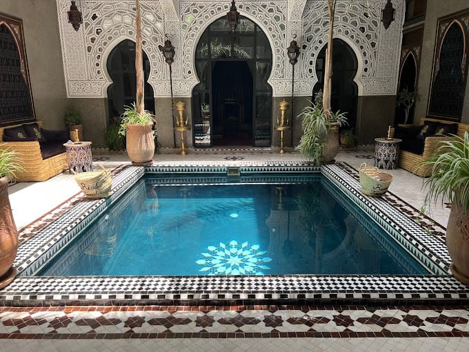
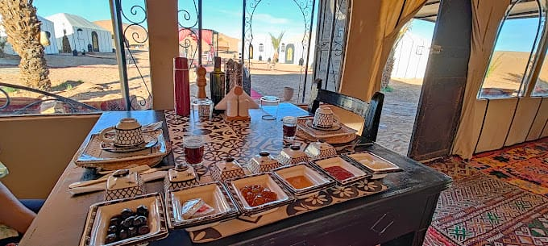

The short answer: Ten days is the ideal length for a first trip to Morocco. The classic private route arrives in Casablanca, heads north through Rabat to Chefchaouen, spends two nights in Fes, crosses the Middle Atlas to two nights in the Sahara at Merzouga, then returns west through the Todra and Dades gorges and over the High Atlas to finish with two nights in Marrakech. If the desert matters most to you, an alternative loop from Marrakech spends four nights across two different dune seas.
Ask ten Morocco specialists how long a first trip should be, and most will say ten days. It's long enough to see the imperial cities, the mountains and the Sahara without spending every waking hour in a car, and short enough to fit into most vacation allowances. The routes below are the ones we drive most often with private guests, with real distances and driving times.
Why 10 Days Works So Well
- It includes the Sahara properly. Merzouga is a long way from both Marrakech and Fes, so the desert needs at least three days. Ten days fits two nights in the dunes comfortably.
- It allows two nights in the great cities. Fes and Marrakech deserve at least one full day each with a local guide.
- It links naturally. Arriving in Casablanca and leaving from Marrakech (or the reverse) avoids backtracking.
The Classic 10-Day Route, Day by Day
Day 1: Casablanca to Rabat
You're met at Casablanca's Mohammed V airport and drive about 1h15 north to Rabat, Morocco's calm, elegant capital. Visit the Hassan Tower and the Mausoleum of Mohammed V, and walk the blue-and-white lanes of the Kasbah des Oudayas above the ocean. See our Rabat guide. If time allows, the Hassan II Mosque in Casablanca is one of the few mosques in Morocco open to non-Muslims.
Day 2: Rabat to Chefchaouen
About 3h30 northeast into the Rif Mountains to Chefchaouen, the Blue City. Spend the afternoon wandering its painted lanes and watch the sunset from the Spanish Mosque. Read our Chefchaouen guide.
Day 3: Chefchaouen to Fes via Volubilis and Meknes
Drive south to the Roman ruins of Volubilis, with their remarkable mosaics, then the imperial city of Meknes, before arriving in Fes for the evening.
Day 4: Fes with a local guide
A full day in Fes el-Bali, the world's largest car-free old city: the Bou Inania Madrasa, the Al-Qarawiyyin quarter, the craft souks and the Chouara tanneries. Our Fes medina guide explains what to expect.

Day 5: Fes to the Sahara (Merzouga)
About 470 km and 6h30 through the cedar forests of the Middle Atlas: past Ifrane, the Barbary macaques near Azrou and the Ziz Valley's palm oases. Arrive at the Erg Chebbi dunes for a sunset camel trek to your desert camp. See our guides to the Ziz Valley and camel trekking in Merzouga.
Day 6: A full day in the desert
Sunrise from the dunes, then a 4x4 excursion: a nomad family's tent, Gnawa music in Khamlia and, in the wetter months, the flamingo lake. A second night at camp, under one of the darkest skies you'll ever see.

Day 7: Merzouga to the Dades Valley via the Todra Gorge
About 230 km and 4h30 west. Walk between the towering walls of the Todra Gorge, then continue to the Dades Valley, with its kasbahs and red rock formations. See our Dades and Todra road trip guide.
Day 8: Dades Valley to Marrakech via Ait Benhaddou
About 330 km and 6h30. Pass through the Valley of the Roses and Ouarzazate, explore the UNESCO-listed Ait Benhaddou, then cross the High Atlas on the Tizi n'Tichka pass to Marrakech.
Day 9: Marrakech with a local guide
The Bahia Palace, the Saadian Tombs, the souks and the Koutoubia, then Jemaa el-Fnaa as the evening food stalls light up.
Day 10: Departure
A private transfer to Marrakech airport, or back to Casablanca for international flights.
This is essentially our 11-day Imperial Cities, Chefchaouen and Sahara tour without its final Essaouira day. Keep that day if you'd like to end by the ocean.
Alternative: The 10-Day Desert Loop From Marrakech
If you're flying in and out of Marrakech, or the Sahara is the main reason you're coming, this loop spends four nights in the desert across two very different dune seas:
- Day 1: Arrive in Marrakech.
- Day 2: Marrakech with a local guide.
- Day 3: Over the High Atlas via Ait Benhaddou to the Dades Valley.
- Day 4: Through the Todra Gorge to Merzouga and the Erg Chebbi dunes.
- Day 5: A full day exploring around Merzouga.
- Day 6: Across the south to Zagora and the Draa Valley.
- Day 7: By 4x4 beyond M'Hamid to the remote Erg Chigaga dunes.
- Day 8: A full day at Erg Chigaga.
- Day 9: Back through the Draa Valley to Ouarzazate.
- Day 10: Over the Tizi n'Tichka pass to Marrakech.
This is our Ultimate Morocco Desert Journey. Read our comparison of Merzouga and Erg Chigaga to see how the two deserts differ.
Which 10-Day Route Suits You?
| Classic route | Desert loop | |
|---|---|---|
| Start / end | Casablanca to Marrakech | Marrakech round trip |
| Cities | Rabat, Chefchaouen, Fes, Meknes, Marrakech | Marrakech |
| Desert nights | 2 (Merzouga) | 4 (Merzouga and Erg Chigaga) |
| Best for | First-timers who want the full picture | Desert lovers and photographers |
| Closest private tour | 11-day Imperial Cities & Sahara | 10-day Ultimate Desert |
How to Adjust the Itinerary
- Only 7 or 8 days? Skip Rabat and Chefchaouen, and fly into Fes. Our 8-day Fes to Marrakech journey keeps the desert and both great cities.
- Two weeks? Add Essaouira on the coast and a slower day in the Dades Valley or Skoura Oasis. See our 15-day Grand Adventure.
- Traveling with children or older relatives? Add a night to break the longest driving days. Our guides for families and older travelers have specific advice.
- Traveling in summer? Spend more time on the coast and in the mountains, and time desert activities for sunrise and sunset.
Flights and Where to Start
Casablanca has the most long-haul connections, including nonstop flights from several North American cities. Marrakech and Fes are well connected through Europe. Flying into one city and out of another is the best way to avoid retracing your steps. Our guide to planning a Morocco trip from the USA, Canada or Australia covers flights, entry requirements and jet lag.
Turn This Itinerary Into Your Trip
These routes are a starting point. On a private trip every day can change: extra nights, upgraded riads, a cooking class or a slower pace. Tell us your dates, and we'll send you a personalized version with prices, or browse our Signature Journeys.